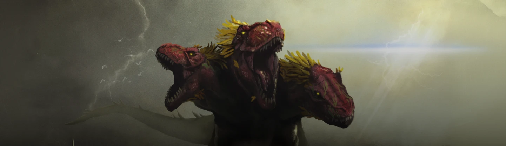

Chi Siamo
Il Progetto
Questo sito nasce con l'intento di offrire una piattaforma di consultazione e archiviazione dedicata all'universo di Magic: The Gathering. Il nostro obiettivo è raccontare la storia, le carte e la struttura del gioco in modo chiaro, completo e visivamente accattivante, creando un punto di riferimento informativo per appassionati e curatori.
Dalle origini del gioco alle ultime espansioni, fino alla documentazione dei diversi formati di gioco, abbiamo voluto realizzare un archivio accessibile a chiunque voglia esplorare o approfondire la conoscenza di questo mondo. Ogni pagina è stata progettata unendo cura redazionale, design dell'informazione ed estetica visiva.
About Us
Siamo Mattia Santo Moltisanti, Diego Meli e Laura Benfante, studenti del corso di Nuove Tecnologie dell'Arte (NTA) presso l'Accademia di Belle Arti di Catania. La nostra passione condivisa per i giochi di carte, unita all'interesse per l'arte digitale e la progettazione web, ci ha spinti a collaborare alla creazione di questo archivio su Magic: The Gathering.
Unendo le nostre competenze artistiche e tecniche, abbiamo sviluppato questa piattaforma per raccogliere ed esporre la vasta storia di Magic in uno spazio moderno e ben strutturato. Ogni sezione del sito è pensata per bilanciare resa estetica e facilità di consultazione, mettendo in pratica quanto appreso nel nostro percorso in Accademia.